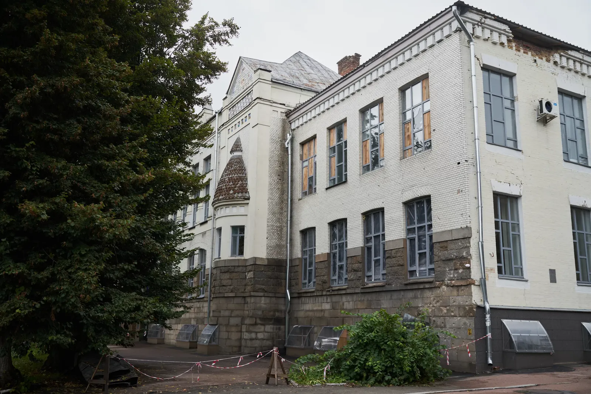
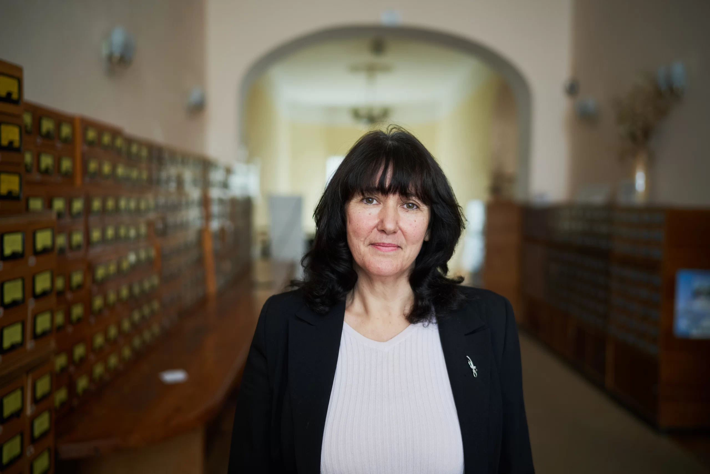
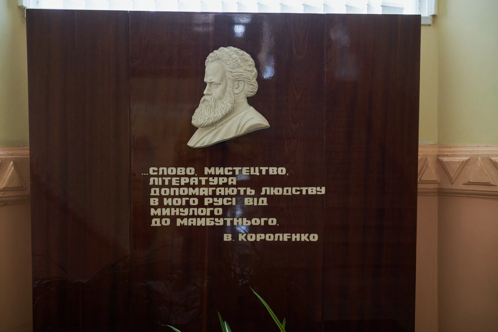
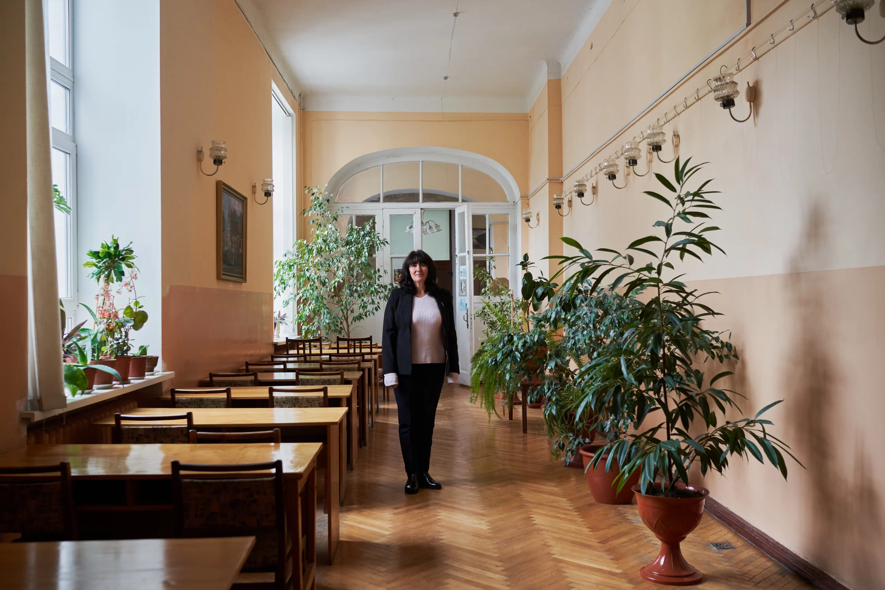
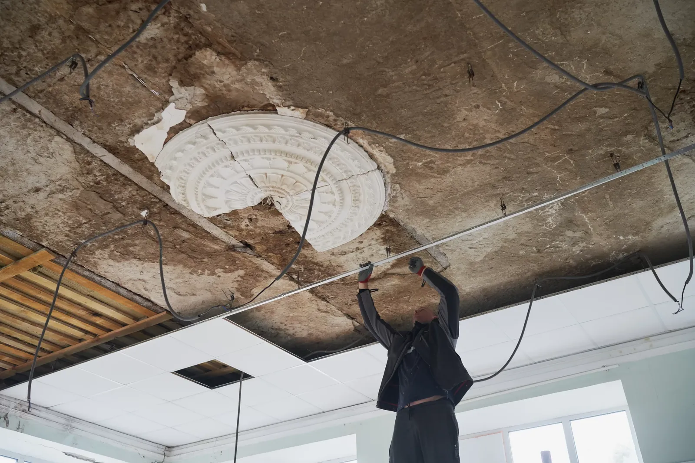
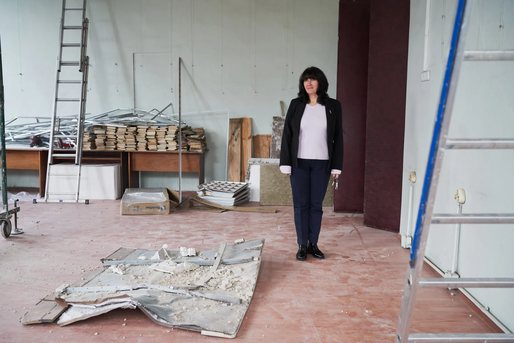
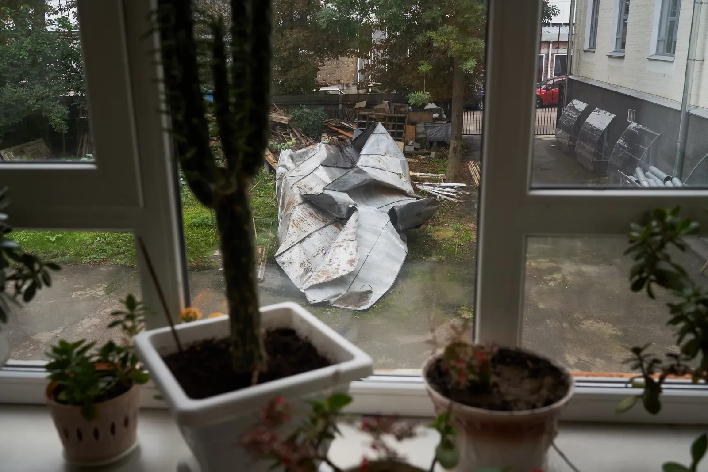
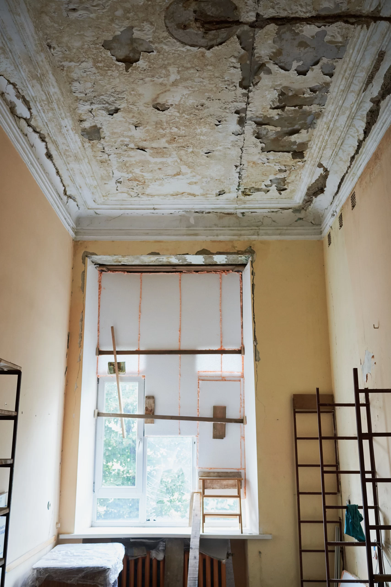

Strategic Object “Library”
20.03.23
Twenty-six libraries were damaged due to hostilities in Chernihiv oblast. Three of them were completely destroyed. In villages, libraries are often located in the buildings of cultural hubs. The Russians occupied their premises to use as their headquarters and warehouses, and therefore perhaps thought that the Ukrainian army was stationed in the culture hubs on the other side of the front line. Thus, they destroyed the libraries in Khreshchate and Ivanivka. It hardly makes any sense that they would shell the Korolenko Chernihiv Regional Library. The very city center, a historical building, not a single military object in the vicinity.
The shelling took place on the night of March 30; it was the last mass attack of the Russians on Chernihiv before the retreat — a kind of farewell from the occupiers who never managed to enter the city. One projectile pierced the roof of the library and the ceiling of the conference hall, the second one landed next to the building and knocked out windows on the ground floor. A week later, the city was hit by a strong storm, which completely broke the already-damaged roof.

When we visited the library in September, they had already managed to install a temporary roof on it. The windows were covered in OSB (is a multilayer sheet made of compressed wood chips and resins), but despite the neatly swept sidewalk, I still managed to find a fragment of a Russian landmine.
We arranged an interview with the director of the library, Inna Aliferenko. We had to wait a little, because there was an air raid alert in the city, and all the workers went to the shelter.

Chernihiv Oblast Library is located in a lovely 1913 building designed in the style of Ukrainian art-nouveau, but it was not meant for a library, but rather for the Noble Land and Peasant Land banks. The origins of the library are much more humble.
It was founded in 1877 by 50 residents of Chernihiv, including Ukrainian public and political activist and journalist of the late 19th century, who was born in Chernihiv oblast Oleksandr Tyshchynskyi, public figure who worked in Chernihiv and lived in the late 19th and early 20th centuries Petro Chervinskyi, senator of the Republic of Poland, a member of the Ukrainian People's Republic and the Ukrainian state under Hetman Skoropadsky Oleksandr Karpynskyi, and the Rusov family (Ukrainian public figures of the late 19th and early 20th centuries. Sofia Rusov[a] was born in Chernihiv oblast). At first, it was a newspaper reading room; later, they started collecting books. At the end of the library's first year of operation, there were 564 of them.
The contributors of the collection were Leonid Hlibov (is a Ukrainian writer, poet, storyteller, publisher, public figure of the 19th century. He lived in Chernihiv for a long time and died in the city), the Hrinchenko family (are Ukrainian public figures of the late 19th and early 20th centuries. Borys Hrinchenko is an ethnographer, writer, teacher, literary critic. Mariia Hrinchenko is a writer and a translator. Borys Hrinchenko worked in Chernihiv oblast for a long time), the Kotsiubynskyi family (are Ukrainian public figures of the late 19th and early 20th centuries. Vira Kotsiubynska is a political prisoner of the Russian Empire, the founder of the first Ukrainian school in Chernihiv. Mykhailo Kotsiubynskyi is a writer), Mykola Voronyi (is a Ukrainian writer, translator, theater director, and actor. One of the founders of the Ukrainian Central Council. One of the founders and directors of the National Theater. For some time, he worked in Chernihiv), and others. Mykhailo Kotsiubynskyi's wife, Vira, held the position of head of the library from 1893 to 1909, was a member of the board and developed the institution.
The library was paid, and it was prestigious to join the funders and sponsors. The city government instructed its employees to also join the board. According to Ms. Aliferenko, archival materials indicate that the officials paid membership fees, but for some reason, did not borrow books.
In the early 20th century, the library became the center of Chernihiv’s public life — they discussed things that were not always favorable to the empire, which led to the institution getting shut down several times.

During the Soviet period, the library collections were repeatedly audited to remove “ideologically harmful literature,” and in 1922, it was named after Vladimir Korolenko (Russian writer of Ukrainian and Polish origin, journalist, publicist, literary editor), who never even visited Chernihiv. His only connection to this city is his correspondence with Kotsiubynskyi.
During the Second World War, the library was completely destroyed, the 216,000 books in its collection burned down. In November 1943, the Soviet authorities restored the library and collected books for it with the help of an exchange fund. They received about 18,000 books, mostly things that nobody was interested in, but locals would bring items from their home libraries and gradually developed the library again. Mostly it was Russian literature or translations of world classics into Russian. At that time, the library was housed in a residential building, later in the Yeletskyi Monastery. In 1974, it was moved to today's premises. At that time, the library had more than 300,000 books.

Currently, there are more than 800,000 books in the collection, of which slightly more than 7,000 are rare books (published before 1917). The most valuable are the collections of local periodicals. The oldest publication is the collection of Mirror of the World magazine from 1786.
Inna sincerely admits that she did not expect a large-scale invasion, did not want to believe that something like that could happen. On the very first day, she called the employees and told them that the library was closing, although some were planning to go to work anyway. During the entire siege of the city, the institution remained closed, but the workers took risks to come and water the flowers. The library’s network engineer was wounded in the street during a sudden shelling. His colleagues looked for painkillers for him, since there was a shortage in Chernihiv at the time; he was eventually evacuated to Kyiv and is now recovering.

During the attacks on Chernihiv, the city library was damaged first, then the regional youth library. There was hope that the Korolenko library would be lucky, but sadly, it wasn’t spared. At least, the story of the complete destruction from World War II did not repeat.
The Russians destroyed the conference hall with equipment and computers, the legal information hub with literature on law, the subscription hall and part of the newspaper collection. The library has suffered more than UAH 31 million (about EUR 787,000 as of March 2023) in damage.

When Chernihiv oblast was liberated, librarians came to work and began to sort out the rubble.
Before the large-scale invasion, the Korolenko library hosted an active cultural and educational life. It would hold over 300 events a year — poetry readings, exhibitions, photo contests, conferences, etc. The institution had foreign language clubs and computer literacy courses for the elderly. Lawyers provided free legal advice at the legal information hub twice a month.

After repairing the damage, the library opened to visitors on September 1. The reading hall is currently closed, because there is not a big enough shelter in case of an air raid. However, during our tour, we saw several visitors who came to exchange borrowed books. Ms. Aliferenko is complaining that the institution's activities are now reduced to a minimum. Some events and speaking clubs are held remotely.
The librarians are busy auditing the collections. According to the directives of the Ministry of Culture, books by anti-Ukrainian authors, with Ukrainophobic content, and by Russian and Soviet authors are removed. Inna claims that the institution has not purchased Russian books since 2014, but now, the commission is analyzing the entire collection in detail. More than 600 titles have already been removed. The director predicts that several thousand more will be identified. The removed literature will be used as waste paper, and the recycling money can be used to purchase new books.

Recently, the library collected book sets for Ukrainian soldiers so that they are not bored in places where they can afford such luxury.
The history of the Korolenko library in Chernihiv shows that Russians clearly understood and still understand the strategic value of such institutions. The library was repeatedly attacked by the Russian Empire, and the new Russian sort-of-empire tried to destroy it.
Books make you think, and thinking means making decisions. Thus, a library is one of the decision-making centers, and apparently, there’s nothing scarier for Russians.
This report has been developed within the project supported by the Public Affairs Section of the U.S. Embassy in Ukraine. The views of the authors do not necessarily reflect the official position of the U.S. government.